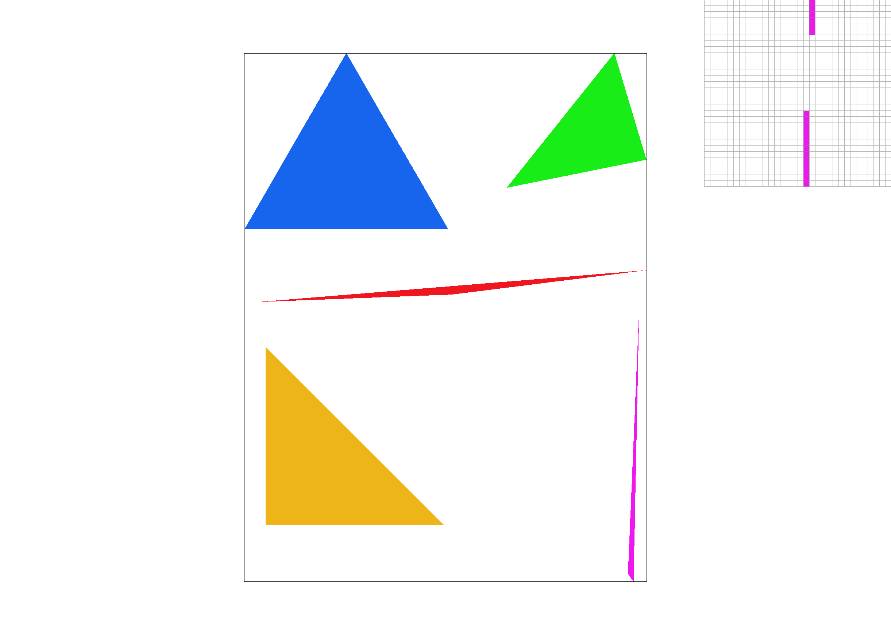
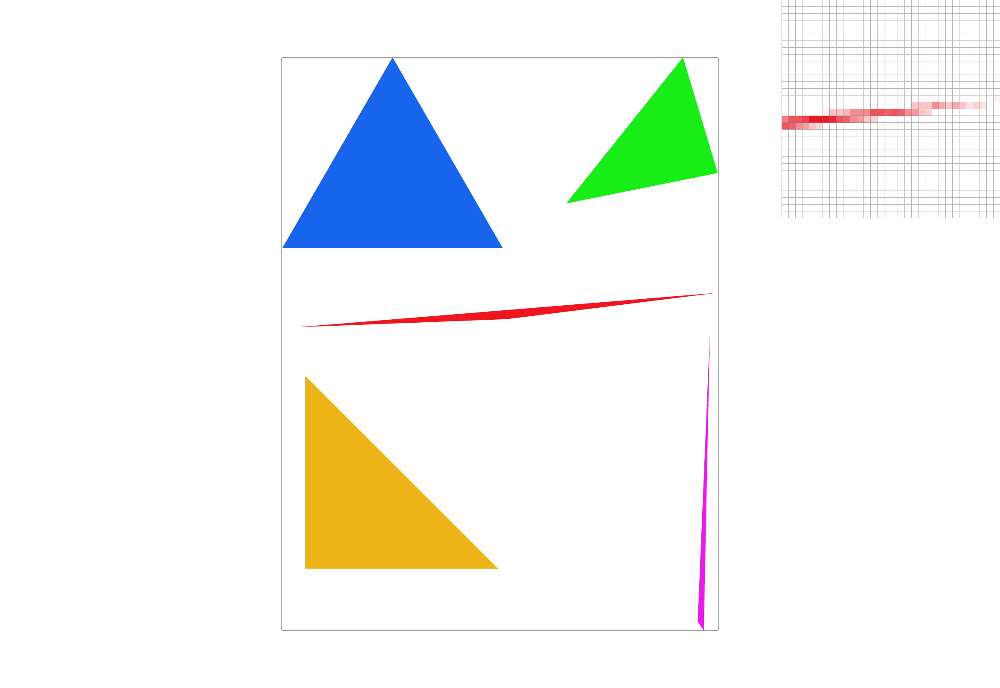
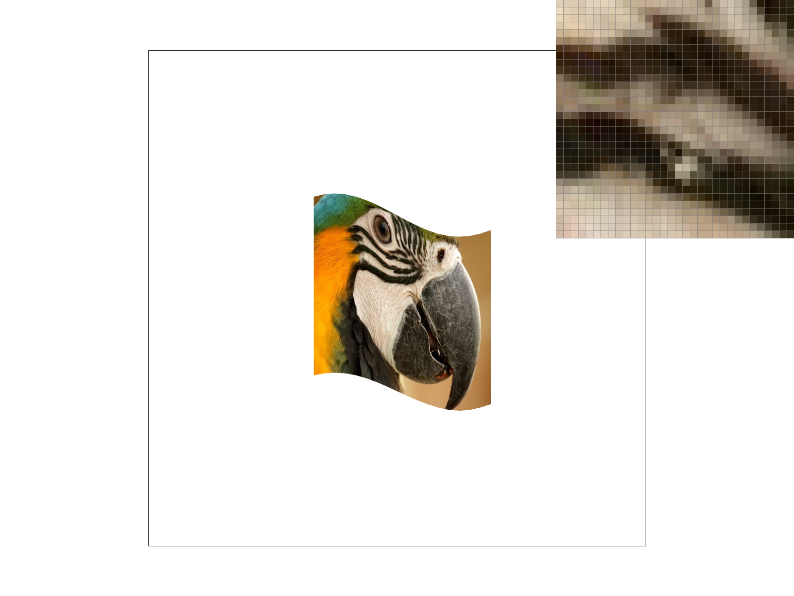
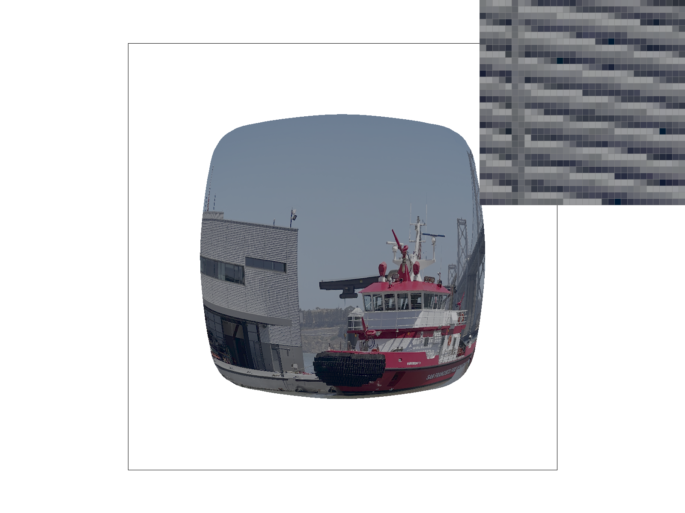
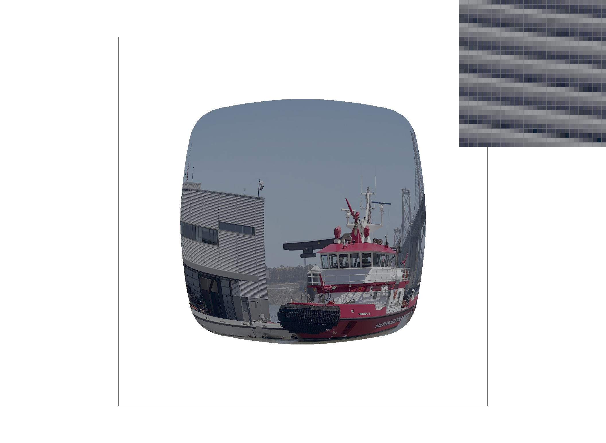
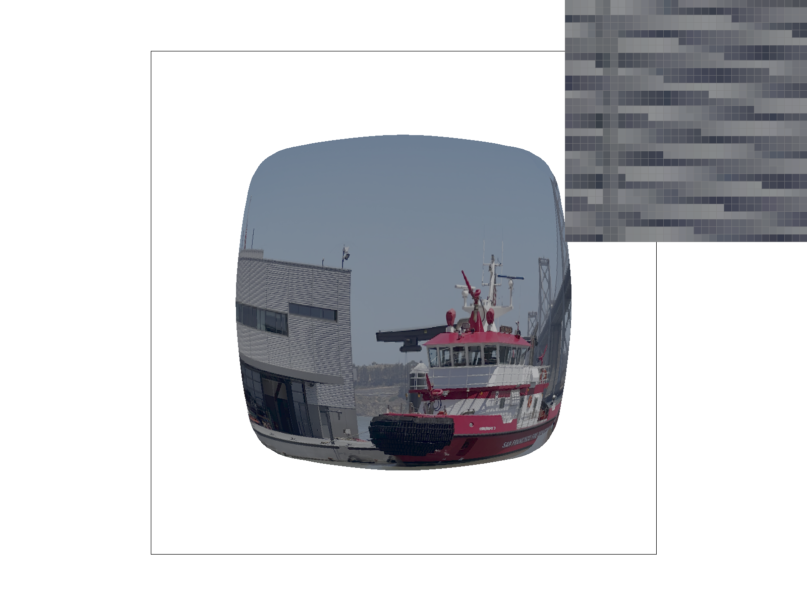
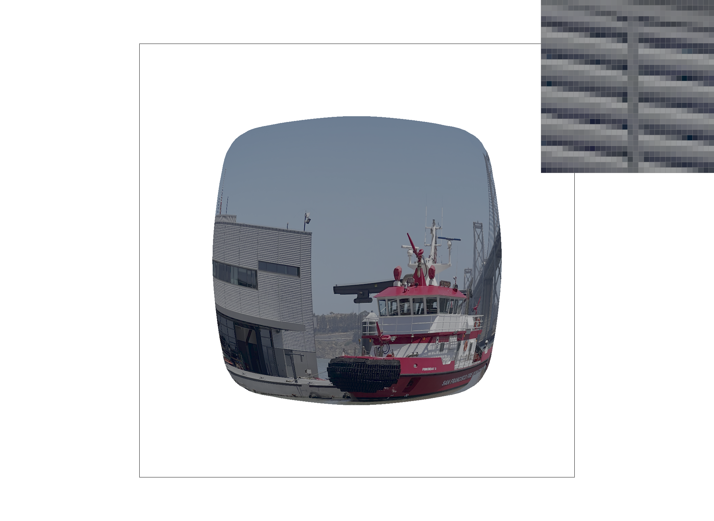

CS184/284A Spring 2025 Homework 1 Write-Up
Link to webpage: https://cal-cs184-student.github.io/hw-webpages-roshanparekh/hw1/index.html
Link to GitHub repository: https://github.com/cal-cs184-student/hw1-rasterizer-rasterman
Overview
In this assignment, we built a simple software rasterizer, implementing the core stages of the graphics pipeline. Our implementation supports triangle rasterization, supersampling-based antialiasing, hierarchical transformations using transformation matrices, and texture mapping with both pixel sampling and mipmap-based level sampling.Task 1: Drawing Single-Color Triangles
To rasterize a triangle, we first compute its bounding box, which is the smallest rectangle that fully encloses the triangle in screen space.
We then iterate over all integer pixel coordinates (x, y) inside this bounding box, starting from the top-left corner and proceeding across each row. For each pixel center, we apply the three line test to determine its position relative to the triangle.
To make the test independent of vertex winding order, we check whether all three function values are either non-negative or non-positive. If this condition holds, the point lies inside the triangle. We also include when the three values are all zero, so that pixels lying exactly on the triangle's edges are also rasterized, ensuring that the triangle boundary is fully colored.
Since our algorithm is itereating over the bounding box, it is no worse than an alogrithm does that sampless over the bounding box.
|

|
Task 2: Antialiasing by Supersampling
In this task, we implemented supersampling to antialias triangles in the rasterizer.
Supersampling works by taking multiple samples per pixel, computing the coverage of each sample within a triangle,
and then averaging the results to produce a smoother final pixel color.
Instead of directly writing each pixel to the framebuffer, the rasterizer first writes to a higher-resolution sample buffer
that stores color values for each subpixel.
The sample buffer is represented by RasterizerImp::sample_buffer,
where each element is a Color object storing RGB values as floating-point numbers.
The size of this buffer depends on the framebuffer dimensions and the user-adjustable sample rate,
and it is updated dynamically whenever the window is resized or the sample rate changes - defined by
width * height * sample_rate
During rasterization, the rasterize_triangle function evaluates the coverage of each triangle at each subpixel within a pixel.
The three line test per subpixel to compute which pixel falls within the bounds of the triange.
After all triangles in the scene have been rasterized, the supersampled colors are downsampled into the final framebuffer
in the resolve_to_framebuffer function.
This is done by averaging the NxN subpixels corresponding to each output pixel,
where N is the square root of the sample rate.
For example, with a sample rate of 4, each pixel contains 16 subpixels arranged in a 4x4 grid,
and the final pixel color is the average of these 16 subpixels.
This averaging blends the triangle color with the background color along edges, effectively smoothing jagged boundaries.
Supersampling is useful because it significantly reduces aliasing artifacts, such as jagged edges.
Implementing supersampling required several modifications to the standard rasterization pipeline.
The framebuffer was extended with a separate sample buffer to hold high-resolution subpixel data.
In resolve_to_framebuffer , a new downsampling step was added to populate the final framebuffer from the supersamples.
Additionally, fill_pixel was adapted to ensure that points and lines still render correctly
by filling all corresponding subpixels with the same color, even though these functions are not antialiased.

|
|

|

|
Task 3: Transforms
Modified the SVG to make the robot look like it's running.

|
Task 4: Barycentric coordinates
In this task, we implemented barycentric interpolation to render triangles with smoothly interpolated colors. Barycentric coordinates provide a way to express any point inside a triangle as a weighted combination of the triangle's three vertices. Each weight corresponds to the "influence" of a particular vertex on that point. Mathematically, for a point P inside a triangle with vertices A, B, and C, the barycentric coordinates (α, β, γ) satisfy the equation:
P = αA + βB + γC, with α + β + γ = 1
These weights are non-negative for points inside the triangle and can be used to interpolate vertex attributes such as color, texture coordinates, or normals. In our rasterizer, we assign a color to each vertex of the triangle, then compute the barycentric coordinates of every pixel within the triangle. The pixel color is determined by multiplying each vertex's color by its corresponding barycentric weight and summing the results. This produces a smooth gradient across the triangle, seamlessly blending the colors of the three vertices.
Here is an example to visualize the previous paragraph:

|

|
Task 5: "Pixel sampling" for texture mapping
In this task, we implemented texture mapping for triangles using pixel sampling. Texture mapping allows a 2D image to be mapped onto the surface of a triangle in the framebuffer. Each vertex of the triangle has a 2D texture coordinate, and the rasterizer interpolates these coordinates across the triangle using barycentric weights. For each pixel within the triangle, the corresponding texture coordinate is used to sample the color from the texture image.
Pixel sampling is the process of determining the color value at a non-integer coordinate in a texture. Since texture coordinates typically map to continuous positions within the image, but the texture is stored as discrete pixels, we must choose a method to compute the final pixel color. In our implementation, we supported two sampling methods: nearest-neighbor and bilinear interpolation.
Nearest-neighbor sampling selects the texel closest to the mapped texture coordinate. It is simple and fast but can produce blocky artifacts, especially when the texture is magnified or viewed at shallow angles. Bilinear sampling computes the weighted average of the four texels surrounding the mapped texture coordinate. This produces smoother results by interpolating colors and reducing the visible "pixelation" effect.
To implement this, we modified RasterizerImp::rasterize_textured_triangle(...) to perform per-pixel texture mapping.
For each pixel inside the triangle, we first compute its interpolated texture coordinate using barycentric interpolation.
Then, depending on the psm variable, we call either Texture::sample_nearest or Texture::sample_bilinear to obtain the pixel color from the texture.
The sampled color is then written into the framebuffer, producing the final textured triangle.
Areas with high-frequency texture details highlight the smoothing effect of bilinear interpolation.
|
|

|
|
|
|
The differences between Figures 2 and 4 are relatively subtle because high-rate supersampling with nearest-neighbor captures more high-frequency details, resulting in a smoother image. In contrast, the difference between Figures 1 and 3 is much more noticeable. Figure 3 appears smoother due to the averaging performed by bilinear interpolation, which is not applied in nearest-neighbor sampling without supersampling.
The largest difference occurs when comparing a non-supersampled nearest-neighbor image to one rendered with bilinear interpolation at essentially any supersampling rate. In this case, the lack of averaging in nearest-neighbor sampling causes visible blockiness and aliasing, whereas supersampling and bilinear interpolation both combine surrounding pixel values to produce a much smoother and visually appealing result.
Task 6: "Level Sampling" with mipmaps for texture mapping
We extended texture mapping to support level sampling using mipmaps, which are precomputed, downsampled versions of the texture. Level sampling reduces aliasing when textures are minified or viewed at an angle by selecting the appropriate mipmap level for each pixel.
For each pixel, we compute barycentric-interpolated texture coordinates and the partial derivatives of the texture
coordinates with respect to screen-space coordinates. These derivatives are scaled by the texture size and passed
to Texture::get_level to determine the correct mipmap level.
We implemented three strategies: L_ZERO samples the full-resolution texture, L_NEAREST selects the nearest mipmap level, and L_LINEAR performs trilinear sampling by interpolating between two adjacent levels. Combined with nearest or bilinear pixel sampling, trilinear filtering provides smooth textures at varying distances.
Level sampling allows tradeoffs between speed, memory, and antialiasing quality. L_ZERO is fast but prone to aliasing, L_NEAREST reduces aliasing with moderate cost, and L_LINEAR gives the smoothest results at higher computational cost. Supersampling further reduces aliasing but increases memory and computation.
|

|

|
|

|

|
The distinction between the different sampling methods can be seen when looking at the building on the left